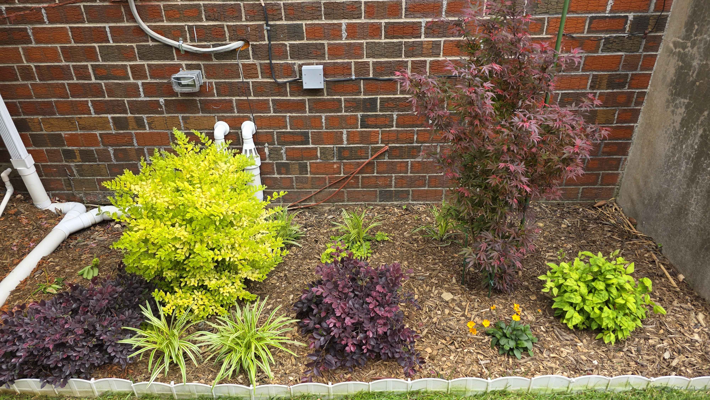
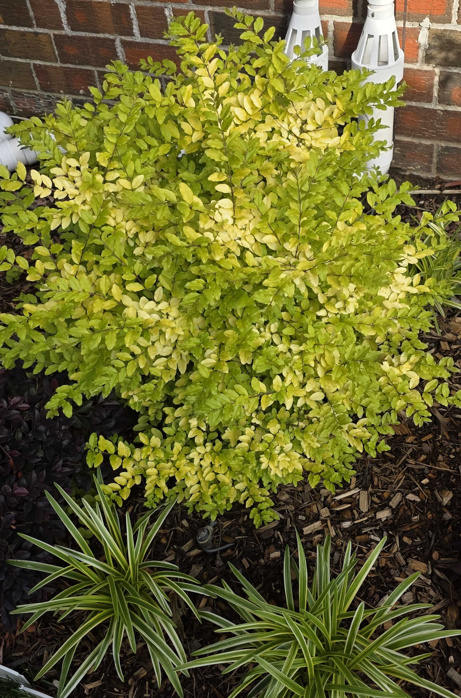

Part of the full color block
The ligustrum is now reading as one side of a larger composition, glowing chartreuse across from the red Shaina maple and burgundy lower planting.
Season notes

Sunshine and liriope
The ligustrum is at full late-May glow, with creamy chartreuse foliage sitting cleanly above the variegated liriope edge.
Season notes

Sunshine and burgundy contrast
A strong close view of why the pairing works: bright yellow-green shrub color held down by the purple loropetalum beneath it.
Season notes

Chartreuse corner
Sunshine is blazing in the side-house corner, giving the whole foundation run a bright visual stop.
Season notes

Holding the middle
The shrub is already acting like the bright center of this side-house planting, with loropetalum spreading low around it.
Season notes

Early side-house contrast
Early spring view of the ligustrum lighting up the corner while the purple loropetalum supplies the first strong contrast.